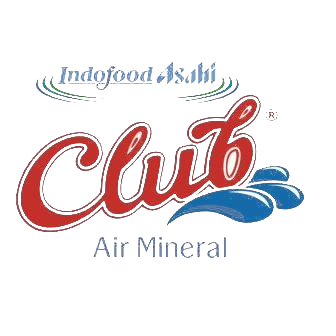
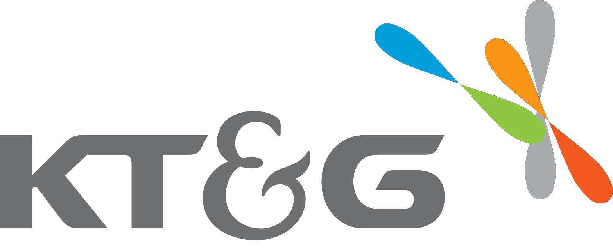
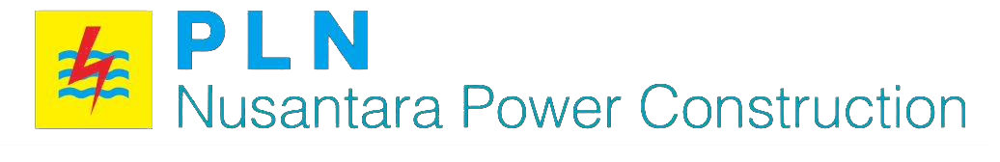
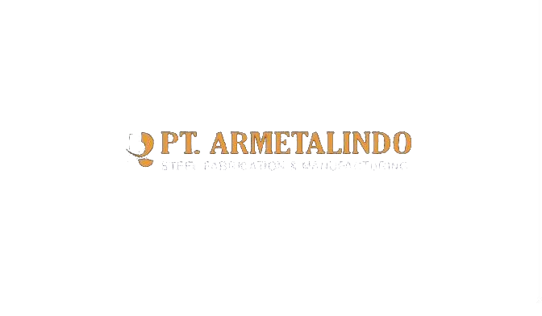
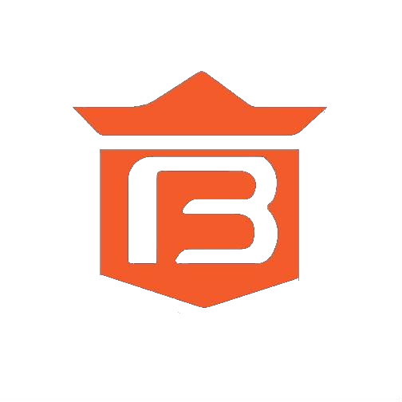
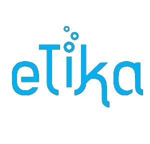
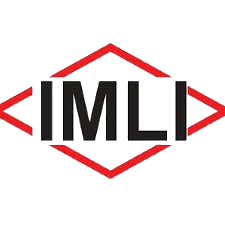
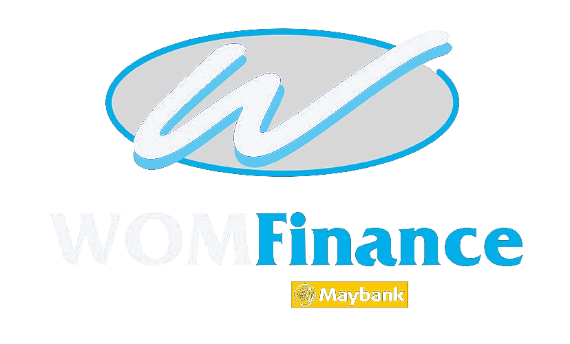

"Dibangun atas Kepercayaan, Digerakkan oleh Keandalan"
Dari sistem racking dan otomasi industri hingga HVAC, mesin kustom, dan layanan forklift — solusi industri yang andal untuk perusahaan-perusahaan terkemuka di Indonesia sejak 2014.
Indo Citra Jaya Sentosa adalah penyedia solusi industri terpercaya yang berbasis di Pasuruan, Jawa Timur.
Berdiri sejak 2014 dengan fokus pada sistem racking, kami berkembang ke segmen otomasi pada 2020 dan manufaktur mesin kustom pada 2024. Kami melayani klien di sektor manufaktur, makanan dan minuman, ketenagalistrikan, serta komersial.
Tim insinyur bersertifikat kami menghadirkan solusi yang efisien dan terukur untuk meningkatkan produktivitas operasional Anda. Dengan pendekatan berorientasi hasil dan layanan purna jual yang andal, kami membangun kemitraan jangka panjang yang didasarkan pada kepercayaan.
Pelajari Lebih LanjutSistem PLC/SCADA, kendali proses, integrasi pabrik cerdas
Perancangan, pemasangan, dan pemeliharaan untuk fasilitas komersial dan industri
Mesin yang dirancang khusus sesuai kebutuhan operasional Anda
Tim dukungan yang siap membantu kapanpun Anda membutuhkan
Dari racking dan otomasi hingga HVAC, mesin kustom, perbaikan, dan forklift. Enam bidang layanan, satu mitra terpercaya.
Kami mengotomasi proses Anda menggunakan pemrograman PLC dan integrasi SCADA penuh untuk meningkatkan efisiensi dan mengurangi biaya operasional.
PelajariSolusi HVAC lengkap untuk pabrik, gudang, dan gedung komersial. Desain hemat energi, pemasangan profesional, dan pemeliharaan berkelanjutan.
PelajariManufaktur mesin kustom, perbaikan suku cadang industri, sistem racking, dan layanan forklift untuk menjaga fasilitas Anda beroperasi penuh.
PelajariBangga melayani perusahaan dan organisasi terkemuka di seluruh Indonesia.








Indo Citra Jaya Sentosa adalah penyedia jasa otomasi industri yang berbasis di Pasuruan, Jawa Timur. Kami mengerjakan pemrograman PLC (Siemens, Omron, Schneider Electric), perancangan dan implementasi sistem SCADA, fabrikasi dan pengkabelan panel kontrol, hingga komisioning lini produksi otomatis. Perusahaan berdiri sejak 2014 dan masuk ke segmen otomasi pada 2020.
Indo Citra Jaya Sentosa menangani HVAC untuk pabrik, gudang, dan gedung komersial di Pasuruan dan seluruh Jawa Timur: kalkulasi beban dan perancangan sistem, pemasangan dan integrasi chiller, pekerjaan AHU, FCU, dan ducting, overhaul chiller, refrigerasi dan cold storage, serta program pemeliharaan preventif.
Ada enam bidang layanan: (1) Otomasi Industri — PLC, SCADA, dan panel kontrol; (2) Sistem HVAC — perancangan, pemasangan dan servis chiller, AHU/FCU; (3) Mesin Kustom — mesin yang dirancang dan dibuat khusus untuk lini produksi tertentu; (4) Sistem Racking — racking selektif, drive-in, palet heavy-duty, dan mezzanine; (5) Forklift — penyediaan dan servis forklift listrik maupun LPG; (6) Perbaikan Suku Cadang Industri — kompresor, pompa, motor, drive, dan panel listrik.
Ya. Tim kami berbasis di Pasuruan, Jawa Timur, dan melayani klien di seluruh Jawa Timur serta wilayah Indonesia lainnya di sektor manufaktur, makanan dan minuman, ketenagalistrikan, dan komersial. Kami juga pernah bekerja sama dengan perusahaan internasional seperti Autorun Inc (Korea) dan Countec Ltd.
Setiap proyek melalui empat tahap: konsultasi untuk memahami kebutuhan dan kondisi lokasi; desain teknik berupa proposal teknis, gambar, dan daftar material; pemasangan oleh teknisi bersertifikat; lalu serah terima yang mencakup komisioning, dokumentasi, pelatihan, dan dukungan purna jual. Proposal disiapkan dalam 48 jam setelah konsultasi awal.
Ya. Teknisi kami mendiagnosis dan memperbaiki kompresor, sistem konveyor, pompa, motor dan drive, sistem hidrolik dan pneumatik, serta panel listrik. Tersedia juga program pemeliharaan kontrak bagi klien yang menginginkan servis terjadwal sepanjang tahun.
Sejak 2014. Perusahaan berawal dari sistem racking untuk gudang, berkembang ke otomasi industri pada 2020, dan meluncurkan manufaktur mesin kustom pada 2024. Saat ini kami melayani lebih dari 50 klien.
Hubungi kami lewat WhatsApp di +62 812-3546-4274 (Fredy, penjualan dan proyek) atau +62 822-4522-5738 (Hilmy, operasional), atau email ke indocitra.tech@gmail.com. Kantor kami berada di Pasuruan, Jawa Timur, Indonesia.
Tim kami siap mengkaji kebutuhan Anda dan memberikan solusi teknik yang tepat sasaran.